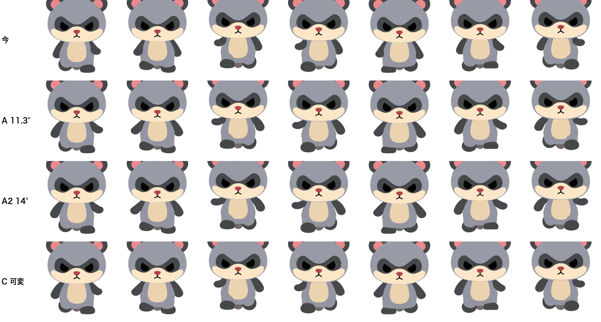
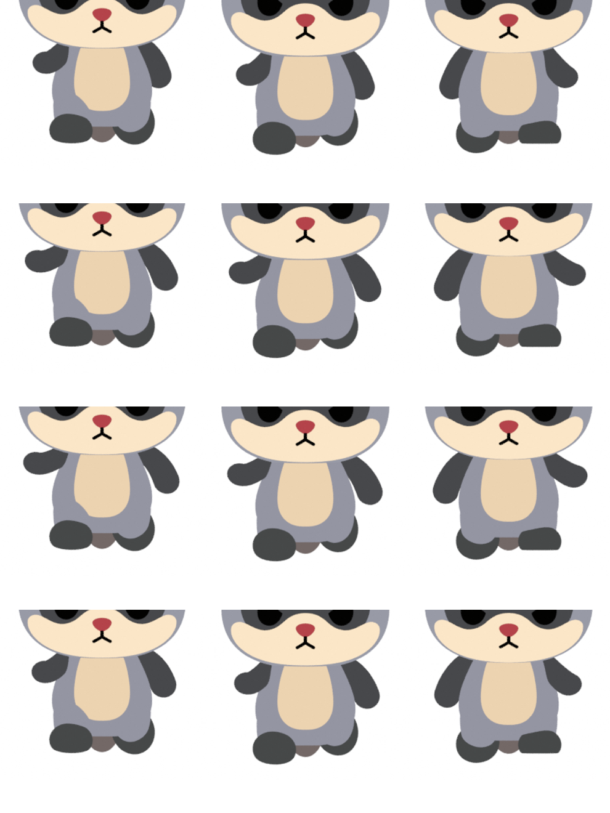
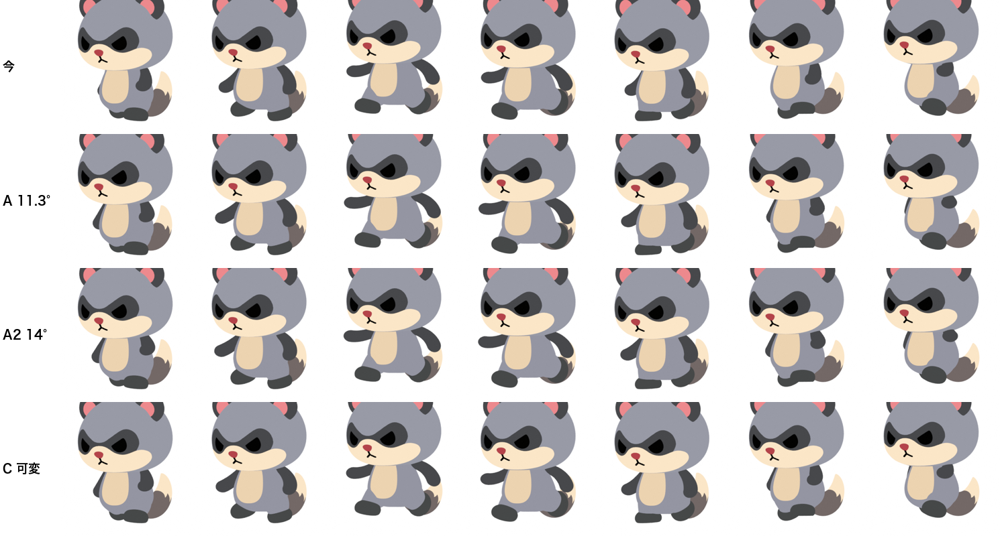
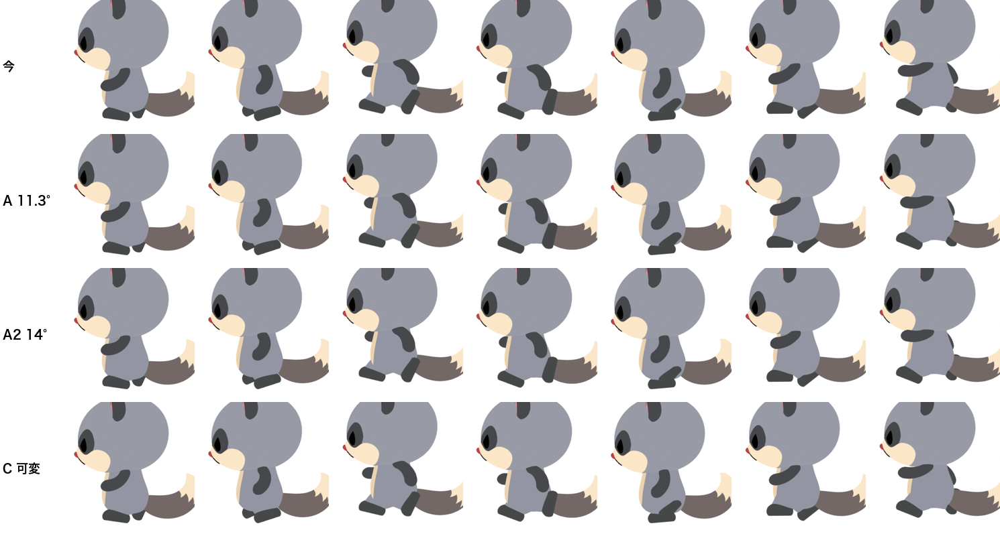
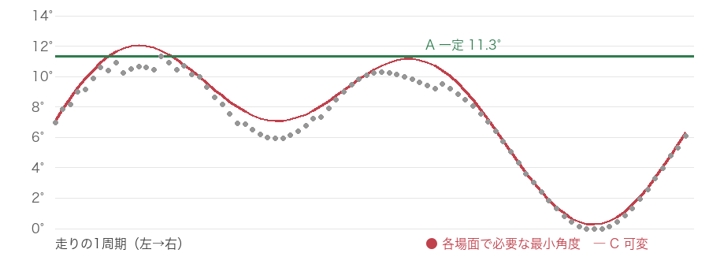

腕は一定の 11.3° だけ外に開く（左右とも・走りの間ずっと同じ角度）。腕の振りや肘の曲がりは今のままです。
走りをループさせながら、カメラを 正面 → 真横 → 正面 と回しています。
さらに遅く：
正面：

正面の拡大（3場面）：

斜め 35°：

真横：

実際のリグで走りの各場面の腕と胴の位置を測りました。そのうえで「正面から見て、腕が胴の輪郭に掛かる深さが、今の走りで一番きれいな場面を超えない」ことを基準にしています。これを満たす最小の角度を計算しました（許容は約 2 ピクセル）。
灰色の点は「各場面で必要な最小角度」です。周期の大半で 6〜11° が必要で、必要がほぼ 0 なのは後ろへ振り切った一瞬だけです。場面ごとに変えても（赤線）一定（緑線）とほとんど差がないので、一定を選びました。

参考：斜めから見た場面まで同じ基準を課すと、±5° で 17.6°、±10° で 24°、±15° で 31° が必要になります。斜めで手前の腕が体の前を横切るのは普通の立体の見え方なので、正面の基準に絞りました。